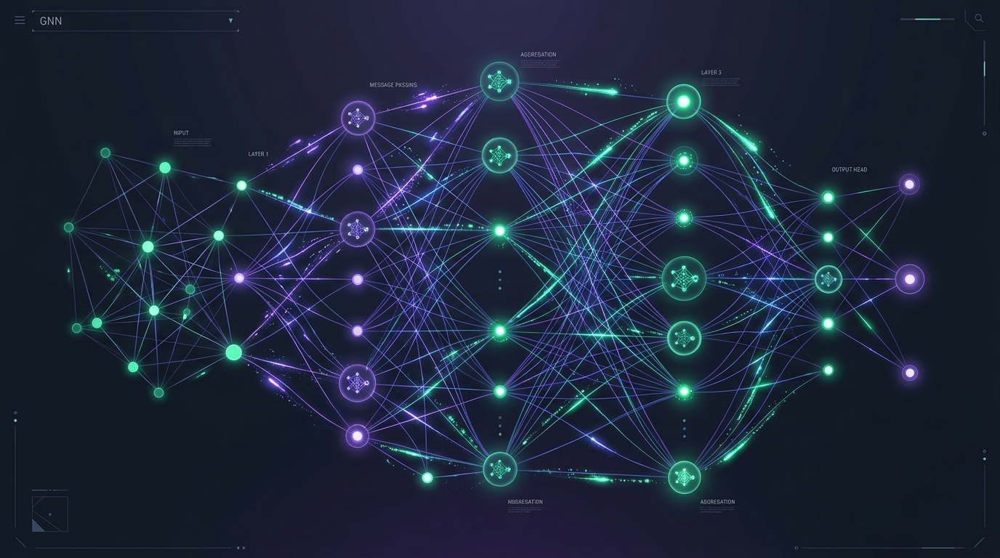

Much of the classical deep learning success has been dominated by grid-like structures: Convolutional Neural Networks (CNNs) for 2D images, and Recurrent Neural Networks (RNNs) or Transformers for 1D text sequences.
However, real-world data is rarely that tidy. From social connections and financial transaction networks to the molecular bindings of life-saving drugs, data often exists naturally as graphs—networks of interconnected entities. To learn directly from these non-Euclidean structures, we rely on Graph Neural Networks (GNNs).
What is a Graph Neural Network?
A graph consists of Nodes (vertices) representing entities and Edges (links) representing the relationships between them. Nodes and edges can both have feature vectors associated with them.
Unlike traditional neural networks which require flattening graph data (and in the process losing vital structural topology), GNNs preserve graph integrity. They use the connections in the graph to pass information between nodes, enabling the neural network to learn embeddings that represent both individual features and relational structures.
The Core Secret: Message Passing
GNNs work through a process called neighborhood aggregation or message passing. In each layer, every node gathers feature representations from its immediate neighbors, aggregates them (using order-invariant operators like sum, mean, or max), and combines them with its own feature representation to update its state. Over L layers, a node successfully encodes information from its L-hop neighbors.
Three Major Problems GNNs Solve
By capturing structural context, GNNs let us perform predictions at three different granularities of a graph:
-
1. Node Classification (Entity Level):
Predicting the label or property of a single node based on its characteristics and neighbors.
Example: Detecting fraudulent users or bot accounts on a transaction network. Even if a bot mimics normal behavior, its structural connections to known fraudulent clusters expose it. -
2. Link Prediction (Edge Level):
Determining the likelihood of a connection forming or existing between two nodes.
Example: Recommender systems (predicting if a user will purchase a specific product represented as user-to-item edges) and social network recommendations (suggesting connections). -
3. Graph Classification (Graph Level):
Classifying the entire graph structure into a particular category.
Example: Drug discovery. Molecules are naturally represented as graphs where atoms are nodes and chemical bonds are edges. GNNs can predict whether a molecular graph represents a toxic compound or a potential cure for a disease.
Looking Ahead
As graph data grows in size and complexity, scaling GNNs to handle billions of nodes has become a major engineering focus. Modern frameworks like PyTorch Geometric (PyG) and Deep Graph Library (DGL) have made GNNs accessible to ML practitioners, enabling rapid iterations.
Whether it's building better fraud detection systems, uncovering the secrets of biology, or scaling industrial recommendation engines, GNNs represent a fundamental shift in how neural networks perceive relational datasets.